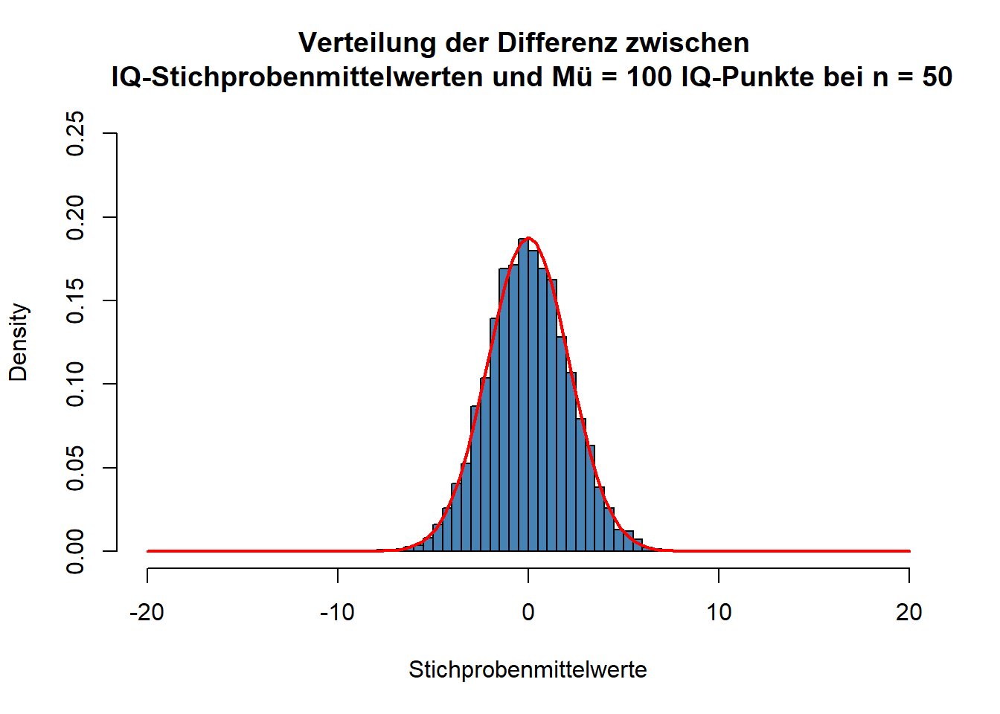
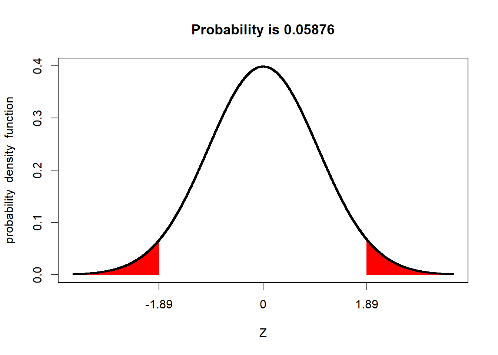
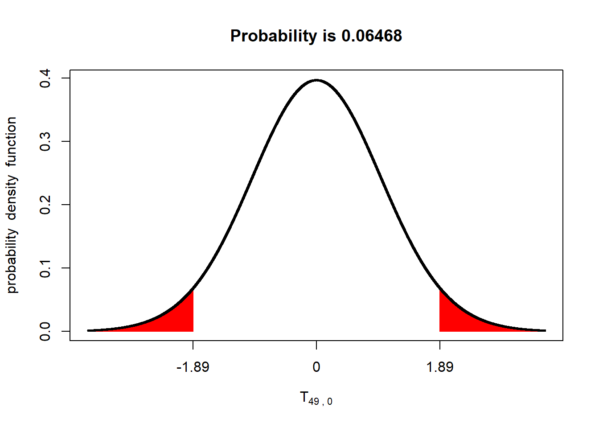
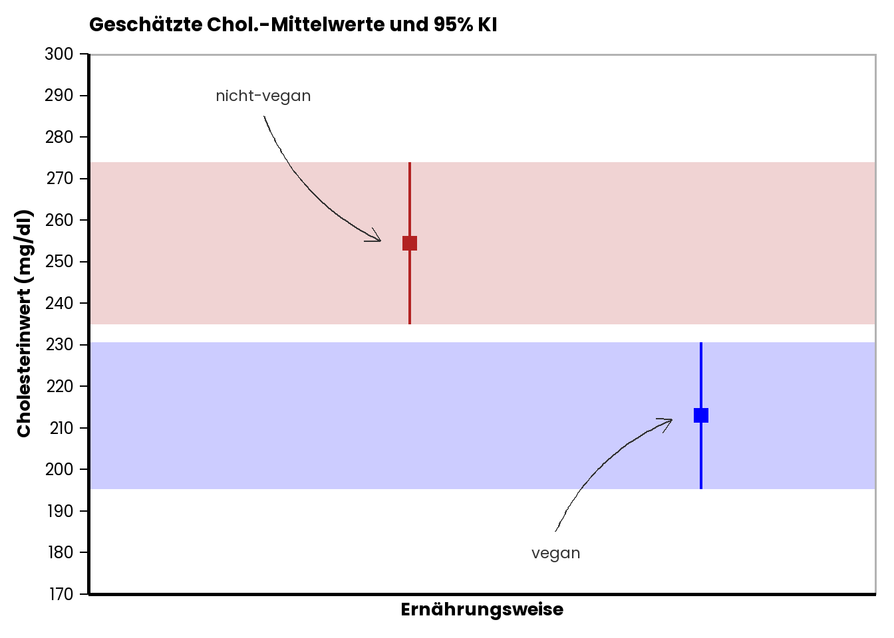
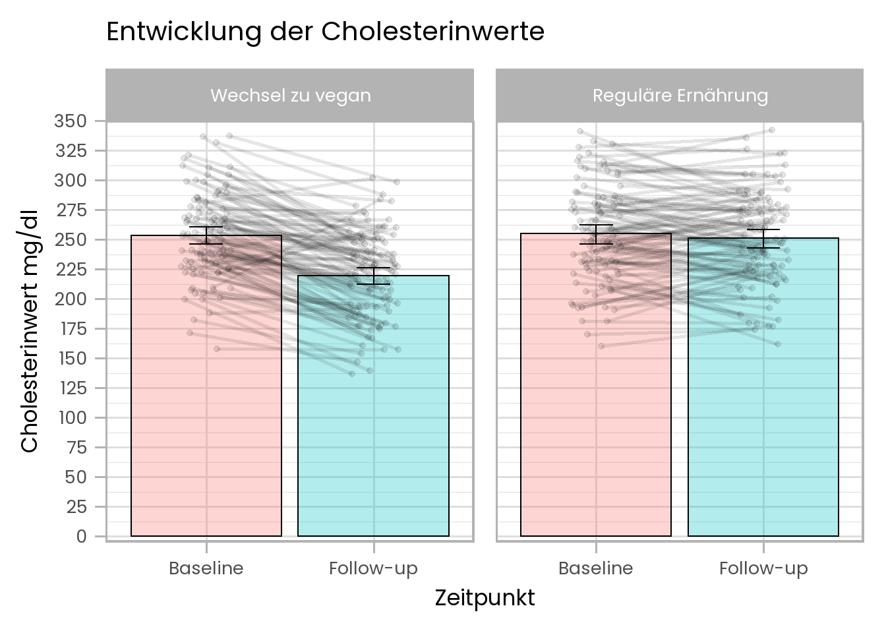

Sitzung 6: Inferenzstatistik – Mittelwertsunterschiede analysieren (t-Tests)
In der letzten Sitzung haben wir uns mit der Schätzung von Populationsmittelwerten (\(\mu\)) vertraut gemacht und gesehen, wie ein Populationsmittelwert auf Basis von Zufallsstichproben geschätzt werden kann. Dabei haben wir zwei Schätzmaße betrachtet: Den Stichprobenmittelwert als Punktschätzer für \(\mu\) und den Standardfehler (\(SE\)) bzw. das 95% Konfidenzintervall als Intervallschätzer. Das wichtigste Konzept der letzten Sitzung war das der theoretischen “Stichprobenkennwertverteilung”: Um zu beurteilen, wie gut ein ermittelter Stichprobenmittelwert den Populationsmittelwert schätzt, haben wir Wissen über die theoretisch angenommene Verteilung von Stichprobenmittelwerten angewendet. Dazu hatten wir zwei Arten von möglichen Verteilungen benutzt: die Normalverteilung und die t-Verteilung.
In dieser Sitzung wollen wir dieses erworbene Wissen erweitern und auf die Konzepte Signifikanztest und Effektstärke anwenden.
Mittels Signifkanztest prüft und quantifiziert man, wie sehr ein gefundenes Stichprobenergebnis von einer bestimmten Erwartung abweicht. Diese Erwartung wird typischerweise als Nullhypothese (\(H_0\)) bezeichnet. Wenn ein Befund (z.B. ein gemessener Stichprobenmittelwert) unter der Nullhypothese nur sehr unwahrscheinlich ist, so wird diese Nullhypothese verworfen. In diesem Fall spricht man von einem statistisch signifikanten Ergebnis. Anders gesagt: Beim klassischen Signifikanztesten sammeln wir Evidenz gegen die Nullhypothese.
Signifikanztests lassen sich für verschiedene Szenarien/ Fragestellungen anwenden. Wir können zum Beispiel prüfen, ob sich der Mittelwert (\(\mu\)) einer bestimmten Population von einem theoretisch angenommen Wert unterscheidet. Wir können aber auch prüfen, ob sich der Populationsmittelwert (\(\mu\)) über die Zeit hinweg verändert, oder ob sich zwei Populationen in ihren Mittelwerten unterscheiden.
1 Einstichprobenfall: Ist der Populationsmittelwert von einem bestimmten Wert verschieden?
Beginnen wir mit dem Fall, in dem wir prüfen möchten, ob sich eine bestimmte Population von einem bestimmten, theoretisch angenommen Wert unterscheidet. Dieses Szenario nennt man auch Einstichprobenfall. Als Beispiel können wir auf das Szenario der letzten Woche zurückgreifen und die Versuchsgruppe des besprochenen Experiments betrachten, deren IQ-Werte während lauter Musik gemessen wurden.
Nehmen wir an, (etwas anders als in der letzten Woche) die Hypothese der ForscherInnen sei, dass laute Musik die kognitive Leistung (IQ-Werte) verändert (aber nicht zwangsläufig senkt; sie könnte auch ansteigen). Die Hypothese bezieht sich also lediglich auf eine Veränderung im Vergleich zum “Normalwert” aber sagt keine bestimmte Richtung der Veränderung vorher.
1.1 Nullhypothese
Was ist in diesem Fall die Nullhypothese (\(H_0\)), die für den Signifkanztest herangezogen wird? Die Nullhypothese ist, dass sich die IQ-Werte unter lauter Musik nicht verändern, d.h., der Populationsmittelwert \(\mu\) von Menschen, die lauter Musik ausgesetzt sind, nicht vom “neutralen” Populationsmittelwert (100 IQ-Punkte) verschieden ist.
Wenn die Nullhypothese wahr ist, dann sollten wir also einen Stichprobenmittelwert erwarten, der nah an 100 IQ-Punkten liegt. Mit anderen Worten, die zu erwartende Differenz zwischen Stichprobenmittelwert und Erwartungswert der \(H_0\) ist null. Nehmen wir an, der gefundene mittlere IQ-Wert in der Bedingung “laute Musik” wäre 96 IQ-Punkte gewesen (in unserem Excel-Beispiel letzte Woche war es 91,92; aber nehmen jetzt zunächst einen etwas weniger extremen Wert). Die Frage, die wir uns im Rahmen eines Signifikanztests nun stellen lautet, wie wahrscheinlich dieses (oder ein noch extremeres) Ergebnis gefunden wird, wenn die \(H_0\) tatsächlich wahr ist.

1.2 p-Wert
Wir suchen also eine so genannte bedingte Wahrscheinlichkeit, \(P(A|B)\). Der senkrechte Strich bedeutet “gegeben”. \(P(A|B)\) ist also die Wahrscheinlichkeit von \(A\) gegeben dass \(B\) gilt. Die bedingte Wahrscheinlichkeit, die wir mit unserem Signifkanztest ermitteln wollen, könnte man also so schreiben: \(P(diese~oder~eine~noch~extremere~Abweichung~vom~Erwartungswert~der~H_0 | H_0)\). Da das ein ziemlich langer Ausdruck ist, schreibt man in der Regel dafür einfach nur \(p\). Man spricht dann von p-Wert oder englisch p-value.
der p-Wert (\(p\)), der (oft) im Rahmen eines Signifikanztests ermittelt wird, ist eine bedingte Wahrscheinlichkeit, die angibt, wie wahrscheinlich das beobachtete oder ein noch extremeres Ergebnis unter der Annahme der Gültigkeit der Nullhypothese (\(H_0\)) ist.
Um diese Wahrscheinlichkeit zu ermitteln, greifen wir wieder auf Wissen über theoretische Wahrscheinlichkeitsverteilungen zurück. In diesem Fall benutzen wir eine Verteilung, die sich auf den Abstand zwischen Stichprobenmittelwerten und Erwartungswert der \(H_0\) bezieht. Stellen wir uns dazu vor, wir würden unzählig viele zufällige Stichproben der Größe \(n\) (in unserem Fall war \(n= 50\)) ziehen, sie lauter Musik aussetzen und die IQ-Werte messen. Von jedem der Strichprobenmittelwerte würden wir dann den Erwartungswert der \(H_0\) (in unserem Fall 100 IQ-Punkte) abziehen. Dann würden wir uns die Verteilung dieser Differenzen ansehen. Unten sehen Sie dazu wieder das Ergebnis einer Simulation.

Diese Verteilung ist wieder eine Normalverteilung, die einen Erwartungswert (Mittelwert) von 0 hat. Denn wenn die \(H_0\) stimmt, dann sollte die “wahre Differenz” zwischen der Population und dem von der \(H_0\) erwarteten Wert ja schließlich 0 sein. Der von uns angenommene Stichprobenmittelwert von 96 IQ-Punkten entspricht einer Differenz vom \(H_0\)-Erwartungswert von \(96 - 100 = -4\) IQ-Punkten. Wir müssten nun noch ermitteln, wie wahrscheinlich diese oder eine noch extremere Abweichung unter der oben gezeigten Verteilung ist.
Um nicht mit den IQ-Werten als Maßeinheit für die beobachtete Differenz arbeiten zu müssen, können wir diese wieder in Streuungseinheiten der Verteilung umrechnen. Das erlaubt uns im Anschluss, einfach mit der standardisierten Normalverteilung zu arbeiten. Wir teilen dazu die gemessene Differenz durch den Standardfehler der Verteilung:
\(standardisierte~Abweichung:~z = \frac{M - \mu}{SE} = \frac{M - \mu}{\frac{\sigma}{\sqrt{n}}}= \frac{-4}{\frac{15}{\sqrt{50}}}= -1,89\).
Hier nun noch einmal die Standardnormalverteilung:
Wie Sie sehen, entspricht unsere gefundene Abweichung von \(-4\) IQ-Punkten einer standardisierten Abweichung von \(z = -1,89\). Dieser Wert ist in der Abbildung auch auf der x-Achse markiert. Außerdem ist die Fläche unter der Kurve markiert, die diesen und alle noch extremeren Abweichsungswerte umfasst. Der Anteil dieser Fläche ist über de Abbildung mit \(Probability~= 0.02938\) angegeben. Dieser Wert ist das Ergebnis unseres Signifikanztests. Also: Unter der Annahme, dass die wahre Differenz \(\mu~= 0\) ist, beobachtet man eine Differenz, die mindestens so extrem in den negativen Bereich von 0 abweicht, wie die von uns ermittelte (also von \(-4\) IQ-Punkten bzw. \(-1,89 z\)) mit einer Wahrscheinlichkeit von (gerundet) \(p~= .03\). (Da es sich bei \(p\) um eine Wahrscheinlichkeit handelt, die nur Werte zwischen 0 und 1 annehmen kann, lässt man die \(0\) vor dem Dezimaltrennzeichen in der Regel weg. Außerdem benutzt man bei der Angabe von p-Werten die englische Schreibweise, bei der Punkte “.” statt Kommas “,” als Dezimaltrennzeichen benutzt werden.)
1.3 Statistische Signifikanz?
Ist dieses gefundene Ergebnis nun “statistisch signifikant”? Ab wann spricht man von “statistischer Signifikanz”? Man sagt, dass ein Befund/ eine Beobachtung dann statistisch signifikant ist, wenn sie unter der Annahme der \(H_0\) sehr unwahrscheinlich ist. Den Grenzwert, der dafür in den allermeisten Fällen herangezogen wird, ist \(p < .05\). Das heißt, man spricht dann von statistischer Signifikanz, wenn das beobachtete Ereignis in den Randbereich der theoretischen Verteilung fällt, in dem 5% der Ereignisse fallen. In diesem Fall verwirft man dann die \(H_0\), das heißt, man tut dann so, als wäre sie nicht (mehr) wahr (was man allerdings natürlich nie mit völliger Sicherheit wissen kann).
1.4 Signifikanz bei “ungerichteten” versus “gerichteten” Vorhersagen
Dieses Kriterium von \(p < .05\) scheint in unserem Fall erfüllt zu sein, denn der gemessene z-Wert von \(-1,89\) markiert eine linke Randfläche unter der Verteilung, die nur noch einem Anteil von 3% entspricht (was weniger als 5% sind). Doch wir müssen nun noch eine weitere Sache bedenken. In unserem Beispiel sind wir davon ausgegangen, dass die ForscherInnen lediglich vorhergesagt hätten, dass sich der IQ unter der Bedingung “laute Musik” vom Normalwert unterscheidet aber nicht, in welche Richtung der Unterschied geht. Wo ist das Problem? Die ForscherInnen hätten auch dann die \(H_0\) verworfen, wenn der IQ-Mittelwert der Stichprobe deutlich größer als 100 gewesen wäre. In einem solchen Fall einer “ungerichteten” Vorhersage spricht man deshalb nur dann von einem signifikanten Befund, wenn der gefundene Wert außerhalb der mittleren 95% der Fläche unter der Verteilung liegt. Wir sprechen also im Falle einer solchen ungerichteten Vorhersage nur dann von einem signifikanten Ergebnis, wenn die linke UND die rechte Randfläche unter der Verteilung, die durch den Betrag des gefundenen Abweichungswerts markiert wird, in Summe kleiner als 5% ist. Das ist allerdings in unserem Fall nicht so. Schauen wir uns folgende Abbildung an:

Der Flächenanteil in den Rändern, der von \(+/- 1.89 z\) markiert wird, beträgt (gerundet) 5.9%. Im Falle einer ungerichteten Vorhersage entspricht dieser Wert dem empirisch gefundenen p-Wert (\(p = .059\)), der mit dem Grenzwert von \(.05\) abgeglichen werden muss. Diesen Grenzwert von \(.05\) nennt man auch Signifikanzniveau. In unserem Fall ist der empirisch gefunden p-Wert somit größer als das Signifikanzniveau. Somit sprechen wir in unserem Fall von einem nicht-signifikanten Ergebnis und behalten die \(H_0\) bei. Wir würden uns deshalb so verhalten, als wäre es wahr, dass laute Musik den IQ von Menschen nicht verändert.
Was, wenn die Vorhersage “gerichtet” gewesen wäre, also die ForscherInnen z.B. vorhergesagt hätten, dass laute Musik zu einer Verringerung des IQ führt? In diesem Fall würde man sich tatsächlich nur die Seite der Verteilung ansehen, die in der vorhersagekonformen Richtung liegt. Das wäre in unserem Fall die “negative” bzw. linke Seite der Verteilung gewesen. Bei einer gerichteten Vorhersage hätten wir dann ein signifikantes Ergebnis erhalten, da, wie wir gesehen haben, die Randfläche unter der Verteilung links vom empirischen z-Wert von \(-1.89\) weniger als 5% der Gesamtfläche unter der Verteilung beträgt. Wir hätten dann die \(H_0\) verworfen und uns so verhalten, als würde es stimmen, dass laute Musik den IQ tatsächlich verringert. Allerdings hätten wir bei dieser gerichteten Vorhersage die \(H_0\) auch dann beibehalten müssen, wenn wir einen ungewöhnlich hohen IQ-Wert gefunden hätten. Denn mit der Vorhersage, dass laute Musik den IQ verringert, wäre eine solche Beobachtung schließlich nicht vereinbar gewesen.
Also:
bei einer ungerichteten Vorhersage muss der empirisch gefundene Wert in einen der beiden Randbereiche hineinfallen, die in Summe fünf Prozent der Fläche unter der Verteilung ausmachen.
bei einer gerichteten Vorhersage muss der empirisch gefundene Wert in den vorhersagekonformen Randbereich hineinfallen, der fünf Prozent der Fläche unter der Verteilung ausmacht.
1.5 t-Test
Im Titel dieser Sitzung steht doch “t-Test” und in der Vorlesung hatten Sie auch über “t-Tests” gesprochen. Wo kommt jetzt also der t-Test ins Spiel? Genau wie beim Thema Konfidenzintervalle haben wir das Prinzip des Signifikanztestens oben zunächst anhand der Normalverteilung besprochen. Einen Signifikanztest auf Basis der Normalverteilung nennt man auch z-Test. Wie bei der Konstruktion von Konfidenzintervallen sollte man Signifikanztest auf Basis der Normalverteilung nur dann durchführen, wenn bei der Bestimmung des Standardfehlers (\(SE\)) keine Unsicherheit bezüglich der Populationsstreuung (\(s\)) besteht. Wann immer man die Populationsstreuung nicht kennt, und diese für die Ermittlung von \(SE\) auf Basis der Stichprobe schätzen muss, sollte man also stattdessen einen Signifikanztest durchführen, der auf der t-Verteilung anstatt der Normalverteilung beruht. Die t-Verteilung berücksichtigt schließlich Unsicherheit (bzw. Fehlerhaftigkeit) der Schätzung der Populationsstreuung. In diesem Fall müssten wir die Abweichung des Stichprobenmittelwerts vom von der \(H_0\) vorhergesagten Wert wie folgt standardisieren:
\(standardisierte~Abweichung:~t = \frac{M - \mu}{SE} = \frac{M - \mu}{\frac{s}{\sqrt{n}}}= \frac{-4}{\frac{15}{\sqrt{50}}}= -1,89\).
Hier ist \(\sigma\) einfach durch \(s\) ersetzt worden, ansonsten ändert sich nichts. Wir müssen aber annehmen, dass der eingesetzte Streuungswert von 15 nicht der wahre Wert der Streuung der Populationswerte ist, sondern eben der auf Basis der Stichprobe geschätzte Wert. Wenn wir \(s~=15\) einsetzen, ist unserer resultierender t-Wert natürlich in diesem Fall identisch mit dem zuvor berechneten z-Wert; \(t~= -1.89\). Was sich nun im Vergleich zum obigen Beispiel aber ändert, ist die theoretische Verteilung, die wir zur Beurteilung dieses standardisierten Werts heranziehen. Wir benutzen jetzt die t-Verteilung (deshalb t-Wert und nicht z-Wert).
Unten Sehen sie die entsprechende standardisierte t-Verteilung für unsere Stichprobengröße von \(n = 50\) (Freiheitsgrade \(= n - 1 = 49\)). Die Abbildung zeigt auch den p-Wert des t-Tests für den Fall der ungerichteten Vorhersage.

Der rote Flächenanteil entspricht in diesem Fall einem p-Wert von \(p~= .065\). Generell gilt, dass die p-Werte, die durch einen t-Test ermittelt werden, größer sind, als die p-Werte, die durch einen auf der Normalverteilung beruhenden z-Test ermittelt werden. Man könnte also auch sagen, dass der t-Test “strenger” ist als der z-Test; man benötigt beim t-Test eine extremere Beobachtung, um von einem signifikanten Ergebnis sprechen zu können. Der Unterschied wir allerdings (Sie ahnen es sicher!) umso kleiner, je größer die Stichprobe ist auf der der Test basiert.
Bevor Sie weiterlesen, hier noch ein sehr anschauliches Video, das den Signifikanztest für den “Einstichprobenfall” noch einmal super erklärt:
1.6 Zusammenhang von Einstichprobensignifikanztest und 95% KI einer Populationsmittelwertsschätzung
Schauen wir uns noch an, in welchen Zusammenhang das Ergebnis eines Einstichprobensignifikanztests und das 95% KI für die Schätzung eines Populationsmittelwerts stehen.
In dieser Abbildung ist der gefundene Stichprobenmittelwert von 96 IQ-Punkten als Schätzwert für den Populationsparameter \(\mu\) als schwarzes Kästchen dargestellt. Das 95% Konfidenzintervall des Schätzwerts [91.76, 100.24] ist als Fehlerbalken eingezeichnet. Die rote Linie bei 100 IQ-Punkten kennzeichnet den Erwartungswert des Populationsparameters, wie er von der \(H_0\) angenommen wird. Die rote transparente Fläche kennzeichnet den Bereich um den unter der \(H_0\) angenommenen Populationsparameter, in den 95% aller Stichprobenmittelwerte fallen würden, wenn die \(H_0\) wahr ist. Diese rote Fläche ist genauso breit, wie das 95% KI des Stichprobenmittelwerts. Wie man sieht, liegt der Stichprobenmittelwert von 96 IQ-Punkten noch innerhalb dieser roten Fläche. Wann immer das der Fall ist, schließt natürlich auch das Konfidenzintervall des Stichprobenmittelwerts den von der \(H_0\) vorhergesagten Populationsparameter mit ein (die rote Linie bei 100 IQ-Punkten liegt innerhalb des schwarzen 95% KI des mittels Stichprobe geschätzten Populationsmittelwerts). Wenn der Erwartungswert der \(H_0\) innerhalb des 95% KI des geschätzten Populationsmittelwerts liegt, dann wollen wir nicht ausschließen, dass der wahre Populationsmittelwert tatsächlich der von der \(H_0\) vorhergesagte sein könnte. In diesem Fall ist auch der statistische Test nicht signifikant (d.h., \(p > .05\)). Der vom Signifikanztest ermittelte p-Wert würde erst dann kleiner sein als \(.05\), wenn der durch die Stichprobe geschätzte Mittelwert außerhalb der roten Fläche liegen würde. Die rote Fläche nenn man deshalb auch Beibehaltungsbereich, weil die \(H_0\) immer beibehalten wird, sobald ein gefundener Stichprobenmittelwert in diesem Bereich liegt. Entsprechend nennt man alles außerhalb der roten Fläche Ablehnungsbereich. Fällt ein Stichprobenmittelwert in den Bereich außerhalb der roten Fläche, wird die \(H_0\) ja abgelehnt bzw. verworfen.
2 Unabhängige Gruppen: Unterscheidet sich der Mittelwert von Population A von dem von Population B?
Eben haben wir gesehen, wie man einen Signifikanztest anwendet, um die Frage zu beantworten, wie sehr ein vermuteter Populationsmittelwert mit einem bestimmten theoretischen Wert vereinbar ist. Den Signifikanztest für diesen Fall nennt man auch Einstichprobentest, weil man den Test auf Basis einer Zufallsstichprobe aus der Population durchführt.
Manchmal wird man sich aber auch fragen, ob sich die Mittelwerte zweier Populationen voneinander unterscheiden oder nicht. Da man für die Beantwortung dieser Frage mittels Signifikanztest zwei Zufallsstichproben benötigt (eine aus jeder Population), nennt man den entsprechenden Test (logisch!) Zweichstichprobentest (genauer gesagt Zweistichproben-t-Test, wenn man ihn auf Basis der t-Verteilung anstatt der Normalverteilung durchführt).
Betrachten wir dazu ein neues (fiktives) Beispiel. Nehmen wir an, eine Gruppe von ÄrztInnen möchte die Hypothese prüfen, dass Menschen über 60 Jahre, die sich seit mindestens zwanzig Jahren vegan ernähren, andere Cholesterinwerte haben als Menschen, die sich nicht ausschließlich vegan ernähren. Um Versuchspersonen für die Studie zu gewinnen, werden Werbebroschüren in verschiedenen öffentlichen Einrichtung ausgelegt. Nach einer Weile haben sich zwanzig Personen aus jeder der beiden Populationen für die Studie gemeldet (Achtung: Kann man hier wirklich von Zufallsstichproben sprechen? Wir tun jetzt als wäre das so - aber das ist mehr als fraglich). Alle ProbandInnen werden in das Forschungsinstitut eingeladen, wo sie dann eine Blutprobe für die Cholesterinwertbestimmung abgeben.
Ist die Vorhersage gerichtet oder ungerichtet? Es wird nicht gesagt, welche Population höhere bzw. niedrigere Werte haben soll. Daher ist die Hypothese ungerichtet.
Nehmen wir, dass folgende Stichprobenwerte als Populationsschätzer gemessen wurden:
Geschätzte Populationsmittelwerte und Streuungen:
Gruppe “nicht-vegan”: \(M_{nv}~= 254.36\) mg/dl; \(S_{nv}~= 41.71\) mg/dl.
Gruppe “vegan”: \(M_{v}~= 212.93\) mg/dl; \(S_{v}~= 37.87\) mg/dl.
Hier eine grafische Zusammenfassung des Befunds:

2.1 Nullhypothese beim Zweistichproben-t-Test
Um einen Signifikanztest durchzuführen, müssen wir wieder klären, was die Nullhypothese (\(H_0\)) ist. Im Fall einer ungerichteten Vorhersage über die Unterschiedlichkeit von zwei Populationsmittelwerten ist die \(H_0\), dass sich die zwei Populationsmittelwerte nicht unterscheiden: \(H_0: \mu_{nv} - \mu_{v}~= 0\).
2.2 t-Test
Sie können sich inzwischen sicher schon denken, wie es nun weitergeht. Für die Durchführung des Signifikanztests brauchen wir wieder Wissen über die Stichprobenkennwertverteilung, die man erwarten würde, wenn die \(H_0\) tatsächlich wahr wäre. Wenn man die Unterschiedlichkeit zweier Populationen testen will, fragt man sich, wie die Verteilung der Differenzen der geschätzten Populationsmittelwerte aussehen würde, wenn die \(H_0\) stimmte, dass die Populationsmittelwerte gleich sind. Anders als im Einstichprobenfall von oben stellen wir uns nun vor, wir würden aus beiden Populationen lauter Zufallsstichproben ziehen und dann die Stichprobenmittelwerte voneinander abziehen und uns dann die Verteilung dieser Stichprobenmittelwertsdifferenzen ansehen. Wenn die \(H_0\) wahr ist, dann hätte diese Verteilung natürlich wieder einen Mittelwert von \(0\) und die Streuung wäre in diesem Fall der Standardfehler der Mittelwertsdifferenzen.
Nehmen wir z.B. einfach einmal an, dass beide Populationen in Wahrheit einen mittleren Cholesterinwert von \(254.36\) mg/dl hätten und eine Streuung von \(39.83\) mg/dl (das sind jetzt einfach die gemittelten Werte aus beiden Stichproben); im Prinzip ist es völlig egal, welchen Wert wir für beide Mittelwerte annehmen, sie müssen lediglich gleich sein. Entscheidend ist der Wert für die gemittelte Streuung von \(s_{iB}~= 39.83\). Hier wieder das Ergebnis der Simulation für die Verteilung der Stichprobenmittelwertsdifferenzen:
Alles, was wir für unseren Signifikanztest brauchen, ist im Prinzip wieder Streuung dieser Verteilung, die unter der \(H_0\) bei gegeben Stichprobengrößen bestehen würde: wir suchen also den Standardfehler der Mittelwertsdifferenzen. Dieser ist gegeben durch:
\(SE_{Mdiff}~= \sqrt{\frac{(n_1-1)\cdot s_1^2 + (n_2 -1)\cdot s_2^2}{(n_1-1)+(n_2-1)}\cdot (\frac{1}{n_1}+ \frac{1}{n_2})}\)
Wenn die Stichprobengrößen identisch sind, dann lässt sich diese Formel (zum Glück) noch vereinfachen zu:
\(SE_{Mdiff}~= \sqrt{(s_1^2 + s_2^2)\cdot (\frac{1}{n})}\).
Wie Sie sehen, brauche wir für die Bestimmung des \(SE\) der Mittelwertsdifferenzen wieder Schätzungen der Streuungen für beide Populationen (\(s_1\) und \(s_2\)), die wir auf Basis der Stichproben gewonnen haben. Setzen wir alle Werte ein, so erhalten wir:
\(SE_{Mdiff}~= \sqrt{(41.71^2 + 37.87^2)\cdot (\frac{1}{50})}~= 12.60\).
Die in der Untersuchung geschätzte Mittelwertsdifferenz war: \(M_{nv} - M_{v}~= 254.36 - 212.93~= 41.43\) mg/dl. Wir könnten jetzt die obige Verteilung benutzen und prüfen, ob diese Differenz außerhalb der mittleren 95% der Fläche liegt. Wir benutzen dafür aber wieder die standardisierte Verteilung, d.h., wir rechnen die Differenz wieder in Streuungseinheiten (genauer gesagt \(SE_{Mdiff}\)-Einheiten) um:
\(t = \frac{M_{1} - M_{2}}{SE_{Mdiff}}= \frac{M_{nv} - M_{v}}{SE_{Mdiff}} = \frac{41.43}{12.60}~= 3.29\).
Da wir (weil wir die wahren Populationsstreuungen ja gar nicht kennen) als Prüfverteilung wieder die t-Verteilung anstelle der Normalverteilung heranziehen, haben wir den oben berechneten standardisierten Wert für die Mittelwertsdifferenz von \(3.29\) bereits mit \(t\) (statt \(z\)) bezeichnet.
Hier die (standardisierte) t-Verteilung für die Mittelwertsdifferenzen bei Stichproben von \(N = n_1 + n_2 = 20 + 20 = 40\) (Freiheitsgrade \(= n-1 + n-1 = 38\)).
Die äußeren Randflächen, die durch den gefundenen empirischen t-Wert abgegrenzt werden, sind auch wieder in rot eingetragen aber diesmal so klein, dass wir sie kaum erkennen können. Über der Abbildung steht wieder der Flächenanteil, den diese roten Flächen in Summe einnehmen: \(p = .002\).
Das ist bereits das Ergebnis unseres t-Tests. Da dieser Wert kleiner als das Signifikanzniveau von \(.05\) ist, sprechen wir von einem signifikanten Testergebnis und entschließen uns, die \(H_0\) zu verwerfen. Wir verhalten uns nun also so, als ob sich die Cholesterinwerte von Leuten über 60 Jahren, die sich seit mindestens 20 Jahren vegan ernähren, von den Werten jener Leute über 60 Jahren, die sich nicht vegan ernähren unterscheiden.
Wir haben eben die Entscheidung über die \(H_0\) auf Basis des Vergleichs von \(p\) und dem Signifikanzniveau getroffen (\(p < .05\)). Eine andere Möglichkeit wäre gewesen, zu schauen, ob der empirische \(t\)-Wert jenseits der Grenze des kritischen t-Werts liegt. Der kritische t-Wert der unter der gegeben t-Verteilung Randflächen abgrenzt, die 5% der Fläche ausmachen ist unten gezeigt:

Der von uns gefundene empirische \(t\)-Wert von \(3.29\) liegt jenseits des kritischen Werts von \(t_{krit}(38)~= 2.02\) (die Zahl in Klammern nach dem \(t\) sind die Freiheitsgrade) und wir würden die \(H_0\) damit verwerfen.
Also, es gibt immer zwei Möglichkeiten, über die \(H_0\) zu entscheiden:
- prüfen, ob \(p\) kleiner ist als das Signifikanzniveau von \(.05\) oder
- prüfen, ob der empirische \(t\)-Wert jenseits des kritischen \(t\)-Werts liegt.
2.3 Angabe einer Effektgröße: Cohen’s d
Wie der Signifikanztest für den Zweistichprobenfall funktioniert, wissen Sie jetzt. Kommen wir noch einmal auf die geschätzte Cholesterin-Mittelwertsdifferenz von \(41.43\) mg/dl zurück. Diese Differenz könnte man auch als den “geschätzten Effekt” bzw. als “Effektgröße” bezeichnen. Wenn man Signifikanztests macht, gibt man in der Regel nicht nur an, ob der Test signifikant war, sondern auch, wie groß der gefundene Effekt ist. Die Größe des geschätzten Effekts gibt man dabei in der Regel auch in standardisierter Form an. Das hat den Vorteil, dass die Einheiten dann egal sind. Stellen Sie sich vor, eine andere Forschungseinrichtung führt eine identische Studie durch, misst den Cholesterinwert aber nicht in mg/dl sondern in g/ml. Für einen Vergleich der Effekte zwischen beiden Studien müsste man dann erst alles in dieselbe Einheit umrechnen. Um diesen Schritt zu sparen, gibt man Effekte deshalb standardisiert in Streuungseinheiten an. Diese Effektgröße nennt man Cohen’s d. Im Zweistichprobenfall ist diese gegeben durch:
\(d~= \frac{M_1 - M_2}{s_{iB}}\).
wobei \(s_{iB}\) die “gepoolte” bzw. “gemittelte” Streuung in den Bedingungen ist:
\(s_{iB}~= \sqrt{\frac{(n_1 - 1)\cdot s_1^2 +(n_2 - 1)\cdot s_2^2}{n_1 + n_2 -2}}\)
Cohen’s d gibt somit den Mittelwertsunterschied in (mittleren) Streuungen an. In unserem Fall erhalten wir \(d~= \frac{41.43}{39.83}~= 1.04\). Das heißt, der Mittelwert der Bedingung “nicht vegan” liegt ca. eine Standardabweichung über dem Mittelwert der Bedingung “vegan”. Man spricht in diesem Fall von einem “großen” Effekt. Die Kriterien für die Einteilung der Effektgrößen sind:
- Kleiner Effekt: \(0.2 <= d < 0.5\)
- Mittlerer Effekt: \(0.5 <= d < 0.8\)
- Großer Effekt: \(0.8 <= d < 1.2\)
2.3.1 Konfidenzintervall für d
Auch für die standardisierte Effektgröße lässt sich ein 95% Konfidenzintervall angeben. Die Streuung von \(d\) ist gegeben durch:
\(SE_d~= \sqrt{(\frac{1}{n_1}+\frac{1}{n_2}) + \frac{d^2}{2\cdot(n_1 + n_2)})}\).
In unserem Fall ergibt sich \(SE_d~= 0.34\). Die Effektgröße \(d\) kann also normalverteilt angesehen werden, daher sind die kritischen z-Werte für ein 95% KI \(+/- 1.96\). Damit erhalten wir ein KI von:
- Untergrenze: \(d - SE_d \cdot 1.96~= 1.04 - 0.34 \cdot 1.96~= 0.37\).
- Obergrenze: \(d + SE_d \cdot 1.96~= 1.04 + 0.34 \cdot 1.96~= 1.71\).
Auch das können wir natürlich grafisch darstellen:
Die rote Linie markiert einen Nulleffekt (Cohen’s \(d~ = 0\)). Das ermittelte 95% KI von \(d\) schließt diesen Nulleffekt nicht ein. Auch diese Analyse zeigt also, dass es nicht sehr plausibel ist, anzunehmen, dass die wahre Mittelwertsdifferenz \(0\) ist.
Natürlich kann man Cohen’s \(d\) auch für den Einstichprobenfall bestimmen. Die Formel dafür finden Sie in Ihrer Formelsammlung.
3 Veränderung: Unterscheidet sich der Populationsmittelwert von Population A zum Zeitpunkt t2 von jenem zum Zeiptunkt t1?
Als letztes schauen wir uns an, wie man einen Signifikanztest für Fragen anwenden kann, die sich auf die Veränderung eines Populationsmittelwerts zwischen zwei Messzeitpunkten beziehen. Stellen wir uns dazu vor, die ForscherInnen, die sich für den Zusammenhang zwischen Ernährungsweise und Cholesterinwert interessieren, würden nun eine weiterführende Studie durchführen, in der zuerst der Cholesterinwert einer Zufallsstichprobe von “Nicht-Veganern” gemessen wird. Dieselbe Stichprobe wird dann instruiert, sich fortan für ein Jahr lang vegan zu ernähren. Die ForscherInnen vermuten, dass sich der Cholesterinspiegel durch die Ernährungsumstellung absenken wird. Die ForscherInnen vermuten, dass das so sei. Es gibt außerdem eine Kontrollgruppe von “Nicht-Veganern”, die sich über das Jahr hinweg wie gewöhnlich ernähren soll. Jede Stichprobe besteht aus 100 Leuten. Nach einem Jahr werden von allen Personen erneut die Cholesterinwerte gemessen.
Die Ergebnisse der Studie sehen so aus:

Die Säulen zeigen die Cholesterinmittelwerte der Gruppen zu den beiden Zeitpunkten. Die grauen Punkte und Linien sind die individuellen Cholesterinwerte der verschiedenen Personen. Die Abbildung zeigt, dass sich die Werte der meisten Personen in der Gruppe, die nach der ersten Messung auf eine vegane Ernährung umgestiegen sind abgesenkt haben. In der Gruppe, die sich wie immer ernährt hat, gibt es dagegen keine systematische Veränderung.
Zurück zu den Vorhersagen. Die Vermutung der ForscherInnen war, dass sich die Werte der Gruppe, die auf vegane Ernährung umsteigt, absenken. Die Vorhersage bezieht sich also auf eine Veränderung. Genauer gesagt: Der Mittelwert der Veränderung soll negativ sein. In der Kontrollgruppe soll der Mittelwert der Veränderung dagegen \(0\) sein.
Die Nullhypothese \(H_0\) für beide Gruppen ist somit: Der Mittelwert der Veränderung zwischen Baseline und Follo-up ist \(0\). Für die “vegane” Gruppe vermuten die ForscherInnen natürlich, dass diese eigentlich falsch ist, während sie glauben, dass sie für die “reguläre” Gruppe wahr ist.
Schauen wir uns die Mittelwerte der Veränderung in beiden Bedingungen an:
In der Gruppe, die zu veganer Ernährung wechselt, ist der Mittelwert der Veränderung:
## [1] -34.15702Außerdem zeigt die Abbildung, dass das 95% KI der mittleren Veränderung eine Veränderung von \(0\) nicht einschließt.
In der Gruppe, die weiter isst, wie zu vor, ist die mittlere Veränderung:
## [1] -3.765608Außerdem sehen wir hier, dass das Konfidenzintervall der mittleren Veränderung die \(0\) einschließt.
Mit dieser Information können wir schon sehen, welche Ergebnisse der Signifikanztest liefern wird. Für die “vegane” Gruppe wird die \(H_0\) verworfen werden, während sie für die “reguläre” Gruppe beibehalten werden wird.
3.1 Signifikanztest
In diesem Fall ist die theoretische Prüfverteilung eine, die sich auf die mittlere Veränderung bezieht, die von der \(H_0\) vorhergesagt wird: Also eine Verteilung mit Mittelwert \(0\). Wir könnten also hier auch sagen, dass unsere Zufallstichprobe aus den Veränderungen zwischen den beiden Zeitpunkten besteht und dass der Mittelwert dieser Veränderungen der Schätzwert für die mittlere Veränderung der Population ist.
Die Streuung der Verteilung der mittleren Veränderungen ist der Standardfehler der mittleren Veränderungen, gegeben durch:
\(SE_{Veränd.}~= \frac{s_{Veränd.}}{\sqrt{n}}\).
Wir teilen also die Streuung der Veränderungen durch die Wurzel aus der Stichprobengröße. Die Formel ist also identisch mit der Formel für \(SE\) für den Einstichprobenfall, nur benutzen wir hier eben die Streuung der Veränderungen.
Die geschätzte Streuung der Veränderungen für die Gruppe “vegan” ist:
## [1] 30.21541Und für die Gruppe “reguläre Ernährung”:
## [1] 24.78346berechnen wir \(SE\) für beide Gruppen.
Bedingung “vegan”:
\(SE_{Veränderung~vegan}~= \frac{30.22}{\sqrt{100}}~= 3.02\)
\(SE_{Veränderung~regulär}~= \frac{24.78}{\sqrt{100}}~= 2.48\)
Um standardisierte Werte für die mittleren Veränderungen beider Gruppen zu erhalten teilen wir die gefundenen mittleren Veränderungen durch die entsprechenden Standardfehler.
Bedingung “vegan”: \(t~= \frac{M_{Veränderung~vegan}}{SE_{Veränderung~vegan}}~= \frac{-34.16}{3.02}~= -11.3\)
Bedingung “regulär”: \(t~= \frac{M_{Veränderung~regulär}}{SE_{Veränderung~regulär}}~= \frac{-3.77}{2.48}~= -1.52\)
Nun können wir wieder unter der entsprechenden t-Verteilung nachsehen, welcher Flächenanteil mit den jeweiligen empirischen t-Werten abgegrenzt wird. Zuerst für die Gruppe “regulär”:
Für die Gruppe, die sich weiter wie gewohnt ernährt, erhalten wir also einen p-Wert von \(p~= .13\). Da dieser Wert größer ist als \(.05\) behalten wir für diese Bedingung die \(H_0\) bei. Wir verhalten uns also so, als ob sich die Werte hier in der Population nicht verändert haben.
Nun für die Gruppe, die sich nach der ersten Messung für ein Jahr vegan ernährt hat:
Da es für diese Bedingung eine gerichtete Vorhersage gemacht wurde, nämlich dass sich die Cholesterinwerte absenken, müssen wir in diesem Fall auch nur zu dieser Veränderung passenden Seite der Verteilung betrachten. Das nennt man dann auch “gerichtete” oder “einseitige” Signifikanztestung. In der Abbildung oben sehen Sie, wie weit am linken Rand der empirische t-Wert von \(-11.3\) liegt. Die rote Fläche links davon kann man gar nicht mehr erkennen. Entsprechend klein ist die Wahrscheinlichkeit, eine solch extreme Veränderung zu finden, wenn die \(H_0\) wahr ist: der p-Wert ist \(p~= 8.2e-20\). Das heißt, \(p = 0.000000000000000000008192\). Wir verwerfen somit die \(H_0\). Wir verhalten uns nun so, als wäre die mittlere Veränderung in der Population tatsächlich negativ.
3.2 Effektstärke
Auch mittlere Veränderungen lassen sich als standardisierte Effektgröße angeben:
\(d_{Veränderung}~= \frac{M_{Veränderung}}{s_{Veränderung}}\).
Für die Bedingung “vegan” ergibt sich ein Veränderungseffekt von:
- \(d_{Veränderung~vegan}~= \frac{-34.16}{30.22}~= -1.13\).
Das ist ein großer Effekt. Für die Bedingung “regulär” berechnen wir keine Effektgröße, da wir hier nicht davon ausgehen, dass es überhaupt einen Effekt gibt.
3.3 Ein Video
Zum Abschluss des Theorieteils hier noch ein Link zu einem YouTube-Video, in dem die beiden letzten Signifikanztests nochmal sehr schön erklärt werden.
4 Durchführung in Excel
Nun sollen Sie natürlich noch sehen, wie man die ganzen Tests in Excel durchführen kann. Die Excel-Datei mit den Daten zu allen Beispielen von oben finden hier.
In dieser Sitzung gibt es für die Vorführung in Excel Videos statt Beschreibungen.
4.1 Einstichproben-t-Test
4.2 Zweistichproben-t-Test
4.3 Parrdifferenzen-t-Test
Copyright © 2020 Simon Stephan. All rights reserved.